Tracking all owner decisions, architectural fixes, flow re-connections, and rule corrections across v1.6.
| Status | Item | Requirement Description | Flow / Section | Step IDs & Implementation Details |
|---|---|---|---|---|
| Fixed | 1. Double-Count Formula Fix | Append-only reversal scheme for stock deduction at issue and runner confirmation. Worked examples. | Section 4.1 & Flow C-2 | 4.1 & C25–C31: Implemented explicit append-only offsetting formula: ISSUE_PENDING (-Q) → confirmed appends ISSUE_PENDING_OFFSET (+Q) & ISSUE_CONFIRMED (-Qconf). Full decline appends ISSUE_REVERSAL (+Q). Provided 3 worked examples (issue 5 decline 5; issue 5 confirm 5; issue 5 confirm 3 decline 2). |
| Fixed | 2. Flow C-2 Unconfirmed & Decline | Unconfirmed check starts from pending; runner decline loops to re-pick; partial issue choice. | Flow C-2 | C21–C33: Day-end unconfirmed check starts directly from pending state (C27 No → C28 No → C30). Decline appends reversal, alerts staff & loops to re-pick (C29 → C22). Requester accepts partial and keeps remaining balance open in queue (C32 Yes → C22). 11 boxes. |
| Fixed | 3. Flow G Shrinkage & Waste Split | FC rejected variance books received qty, closes transit & books held shrinkage; split Waste from Return. | Flow G & Data Model | G1–G14: If FC rejects variance, App books received qty, closes transit and books diff as held shrinkage (G8). Waste and Supplier Return strictly split into 2 paths (G9–G11). Added table t_waste_returns_log. Zero occurrences of Supplier Return Note value fields. 12 boxes. |
| Fixed | 4. Flow 0 Profile Creation & Login | Admin creates profile & assigns role/scope before invite; login retry loop; lockout limit; forgot password. | Flow 0 | U1–U13: Added Admin profile creation and role/scope assignment (U4) before invitation (U5). Login wrong password retry loop (U9 No → U10 No → U9). Lockout after limit (U10 Yes → U11). Forgot password from login screen (U8). 12 boxes. |
| Fixed | 5. Roles & Waste Approval Separation | Nobody logs and approves same waste claim; only Sys Admin creates users; Approvers need 2nd approval. | Section 1.1–1.3 | RM removed from waste logging (only Keeper or Staff logs; RM approves minor, FC approves major). Only System Admin creates users; Approver accounts require dual sign-off. Enforced dual-party control on count adjustments and transit variances. |
| Fixed | 6. SAP Import (A-2) Duplicate & Quarantine | Duplicate check by SAP doc number + line; quarantined lines path after Master Data fix; corrected re-export. | Flow A-2 | A25–A34: Duplicate check by SAP doc line key (A27). Corrected re-export appends offsetting reversal (A30). Admin fixes Master Data and re-imports quarantined lines (A31/A32 Yes → A29). 12 boxes. |
| Fixed | 7. Flow D Expected Stock & Lane Order | Restore Expected calculation; FL/RM explanation step; lock after explanation; custodian signs in custodian lane. | Flow D | D2–D14: Restored Expected = Opening + Received - Issued (D3). Custodian signs in Custodian lane (D10). FL/RM records explanation or marks unresolved (D9). Day locked after explanation (D11). Morning check is separate step (D12). 12 boxes. |
| Fixed | 8. Flow C-1 Edit Label & In-Progress Lock | C12 label matches question (Does requester choose Edit Quantity? Yes/No); edit modifies open request; blocked if picking started. | Flow C-1 | C8–C14: If picking started, editing/cancelling locked (C9 Yes → C10). If not started, C12 matches question (Does requester choose Edit Quantity? Yes/No). Editing updates open request record (C13) & returns to window check (C5). 12 boxes. |
| Fixed | 9. Section 8 Pitfalls & Config Cleanup | Remove Apps Script items; add client secret safety, role rule tests, IndexedDB queue; remove invented numbers. | Section 8 & Master §2.2 | Removed 8.1/8.2. Added: DB admin key never reaches phone, automated test suites for RLS, IndexedDB send once. Replaced "15-30s" with "wake time not published, owner to measure". Removed "tolerance". Moved DB pause ping to platform checklist. |
| Fixed | 10. flows.html Responsive Optimization | Status column visible on 390px without horizontal scrolling; remove promotional badge; re-render PNGs. | flows.html | Status placed as first column; added mobile card CSS transformation (stacked with clear labels on ≤640px). Removed promotional badge. Re-rendered all PNGs and verified on mobile. |
| Fixed | Q1 Decision Applied | Every runner has an own account (email); (Audit History: Option C rejected to preserve two-person control). | Flow 0 & Section 1 | All Kitchen Runners provisioned with individual accounts via email invitations. (Audit History: Option C rejected to preserve strict two-person physical segregation). |
| Fixed | Q2 Decision Applied | Variance alerts go to store FL / RM first; escalate to central FC only if unresolved at morning opening. | Flow D | D8–D13: Immediate closing variance alerts route to store-level FL / RM (D9); persistent variances at morning opening escalate to central FC (D12/D13). |
| Fixed | Q7 Decision Applied | One login can switch stores, only within granted permissions. | Section 1 & Data Model | Single login credentials with top-bar Store Switcher dropdown, restricted strictly to stores assigned in m_user_permissions. |
| Trigger | Staff onboarding, password reset, failed login lockout, or staff departure. |
| Actors | System Admin, Staff User, Database Auth Layer. |
| App Record | m_users, m_user_invitations, t_security_logs. |
| Step ID | Role | Action Description | Next Step / Transition |
|---|---|---|---|
| U1 | System Admin | (Start) | Next: U2 |
| U2 | System Admin | U2: Is action triggered by System Admin for user management? | Yes → U3: U3: Is System Admin onboarding a new staff member?; No → U8: U8: Does staff request self-service password reset? |
| U3 | System Admin | U3: Is System Admin onboarding a new staff member? | Yes → U4: U4: System Admin creates profile, assigns role/scope & sends invite; No → U5: U5: Is System Admin deactivating a leaver account? |
| U4 | System Admin | U4: System Admin creates profile, assigns role/scope & sends invite | Next: U9 |
| U5 | System Admin | U5: Is System Admin deactivating a leaver account? | Yes → U6: U6: System Admin deactivates leaver; database revokes access; No → U7: U7: System Admin unlocks account; resets attempt counter |
| U6 | System Admin | U6: System Admin deactivates leaver; database revokes access | Next: U14 |
| U7 | System Admin | U7: System Admin unlocks account; resets attempt counter | Next: U14 |
| U8 | Staff User | U8: Does staff request self-service password reset? | Yes → U9: U9: System sends reset link by email; user sets password; No → U10: U10: Staff enters correct password within attempt limit? |
| U9 | Staff User | U9: System sends reset link by email; user sets password | Next: U10 |
| U10 | Staff User | U10: Staff enters correct password within attempt limit? | Yes → U11: U11: Database authenticates session; applies role & scope via RLS; No → U12: U12: Consecutive failed attempts reach lockout limit? |
| U12 | Staff User | U12: Consecutive failed attempts reach lockout limit? | Yes → U13: U13: Database locks account; alert sent to System Admin; No → U10: U10: Staff enters correct password within attempt limit? |
| U13 | Staff User | U13: Database locks account; alert sent to System Admin | Next: U14 |
| U11 | Staff User | U11: Database authenticates session; applies role & scope via RLS | Next: U14 |
| U14 | System Outcome | (End) | Process End |
| Trigger | Supplier delivery truck arrives at store loading dock. |
| Actors | Admin / Warehouse Keeper, SCM Team. |
| App Record | Delivery note endorsement, SCM price discrepancy log. |
| Step ID | Role | Action Description | Next Step / Transition |
|---|---|---|---|
| A1 | Admin / Warehouse Keeper | (Start) | Next: A2 |
| A2 | Admin / Warehouse Keeper | A2: Delivery arrives within scheduled Receiving Window? | Yes → A4: A4: Check Delivery Note against open Purchase Order in SAP; No → A3: A3: Hold truck at dock or SCM reschedules delivery window |
| A3 | Admin / Warehouse Keeper | A3: Hold truck at dock or SCM reschedules delivery window | Next: A13 |
| A4 | Admin / Warehouse Keeper | A4: Check Delivery Note against open Purchase Order in SAP | Next: A5 |
| A5 | Admin / Warehouse Keeper | A5: Valid open PO exists for delivery? | Yes → A7: A7: Inspect delivery line by line: count, temp, quality, expiry; No → A6: A6: SCM investigates missing PO; refuses truck if unverified |
| A7 | Admin / Warehouse Keeper | A7: Inspect delivery line by line: count, temp, quality, expiry | Next: A8 |
| A8 | Admin / Warehouse Keeper | A8: Lines pass physical and temperature QC inspection? | Yes → A10: A10: Supplier invoice price matches approved PO price?; No → A9: A9: Endorse difference on note; return failed lines to driver |
| A9 | Admin / Warehouse Keeper | A9: Endorse difference on note; return failed lines to driver | Next: A10 |
| A10 | Admin / Warehouse Keeper | A10: Supplier invoice price matches approved PO price? | Yes → A12: A12: Put away accepted goods into room; label received date; No → A11: A11: Report price variance to SCM same day; SCM logs adjustment |
| A12 | Admin / Warehouse Keeper | A12: Put away accepted goods into room; label received date | Next: A13 |
| A6 | SCM Team | A6: SCM investigates missing PO; refuses truck if unverified | Next: A13 |
| A11 | SCM Team | A11: Report price variance to SCM same day; SCM logs adjustment | Next: A12 |
| A13 | Receiving Outcome | (End) | Process End |
| Trigger | Admin keys accepted lines into SAP and exports file. |
| Actors | Admin / Warehouse Keeper, Node Ingestion Server. |
| App Record | t_grpo_imports, t_grpo_import_items, t_grpo_staging_errors, t_stock_movements. |
| Step ID | Role | Action Description | Next Step / Transition |
|---|---|---|---|
| A21 | Admin / Warehouse Keeper | (Start) | Next: A22 |
| A22 | Admin / Warehouse Keeper | A22: Admin enters accepted lines into SAP GRPO as today | Next: A23 |
| A23 | Admin / Warehouse Keeper | A23: Admin exports GRPO file from SAP and uploads to App | Next: A24 |
| A24 | Node Ingestion Server | A24: Uploaded within 1 working day of SAP posting date? | Yes → A26: A26: Read header row 1, map allowlist columns & generate line keys; No → A25: A25: Log upload delay warning to Admin & RM; import proceeds |
| A25 | Node Ingestion Server | A25: Log upload delay warning to Admin & RM; import proceeds | Next: A26 |
| A26 | Node Ingestion Server | A26: Read header row 1, map allowlist columns & generate line keys | Next: A27 |
| A27 | Node Ingestion Server | A27: Is document line key already imported in database? | Yes → A28: A28: Quantity/Item changed with 2nd approval SCM or Finance?; No → A31: A31: Store code, item code & UoM mapped in Master Data? |
| A28 | Node Ingestion Server | A28: Quantity/Item changed with 2nd approval SCM or Finance? | Yes → A30: A30: App appends offsetting reversal of old line before re-import; No → A29: A29: Refresh reference fields only; zero stock change |
| A29 | Node Ingestion Server | A29: Refresh reference fields only; zero stock change | Next: A34 |
| A30 | Node Ingestion Server | A30: App appends offsetting reversal of old line before re-import | Next: A31 |
| A31 | Node Ingestion Server | A31: Store code, item code & UoM mapped in Master Data? | Yes → A33: A33: App appends verified GRPO movement to ledger; updates stock; No → A32: A32: Quarantine line in staging errors; Admin updates master & re-imports |
| A32 | Node Ingestion Server | A32: Quarantine line in staging errors; Admin updates master & re-imports | Next: A34 |
| A33 | Node Ingestion Server | A33: App appends verified GRPO movement to ledger; updates stock | Next: A34 |
| A34 | Import Outcome | (End) | Process End |
| Trigger | Daily shift start or scheduled issue window. |
| Actors | Admin User, Room Custodian (or Backup). |
| App Record | t_custody_logs. |
| Step ID | Role | Action Description | Next Step / Transition |
|---|---|---|---|
| B1 | Admin User | (Start) | Next: B2 |
| B2 | Admin User | B2: Admin configures daily Issue Windows in App settings | Next: B3 |
| B3 | Custodian / Backup per Room | B3: Custodian takes physical room key per Master Data | Next: B4 |
| B5 | Custodian / Backup per Room | B5: Unlock storeroom door during configured Issue Window | Next: B6 |
| B6 | Custodian / Backup per Room | B6: Supervise picking; dispense goods against App requests | Next: B7 |
| B7 | Custodian / Backup per Room | B7: Window ends: lock storeroom door immediately | Next: B11 |
| B9 | Custodian / Backup per Room | B9: Keep room locked; refuse all unscheduled access | Next: B12 |
| B10 | Custodian / Backup per Room | B10: Unlock room for emergency extraction of flagged urgent item | Next: B7 |
| B4 | App / System | B4: Is current time within configured Issue Window? | Yes → B5: B5: Unlock storeroom door during configured Issue Window; No → B8: B8: Authorized urgent request pending in App? |
| B8 | App / System | B8: Authorized urgent request pending in App? | Yes → B10: B10: Unlock room for emergency extraction of flagged urgent item; No → B9: B9: Keep room locked; refuse all unscheduled access |
| B11 | App / System | App: Record room locked status & custody confirmation | Next: B12 |
| B12 | App / System | (End) | Process End |
| Trigger | Kitchen, Bar, or Cheese section requires stock. |
| Actors | Assigned Section Requester, Database Engine. |
| App Record | t_requests, t_request_items. |
| Step ID | Role | Action Description | Next Step / Transition |
|---|---|---|---|
| C1 | Assigned Section Requester | (Start) | Next: C2 |
| C2 | Assigned Section Requester | C2: User authorized as Section Requester in permissions? | Yes → C4: C4: Create request: select item, needed time & quantity in kg/pcs; No → C3: C3: App restricts view to read-only; request creation blocked |
| C3 | Assigned Section Requester | C3: App restricts view to read-only; request creation blocked | Next: C11 |
| C4 | Assigned Section Requester | C4: Create request: select item, needed time & quantity in kg/pcs | Next: C5 |
| C5 | Assigned Section Requester | C5: Is request submitted inside configured Issue Window? | Yes → C6: C6: App queues standard request into storeroom picking list; No → C7: C7: Enter operational reason; request flagged URGENT, not blocked |
| C6 | Assigned Section Requester | C6: App queues standard request into storeroom picking list | Next: C8 |
| C7 | Assigned Section Requester | C7: Enter operational reason; request flagged URGENT, not blocked | Next: C8 |
| C8 | Assigned Section Requester | C8: Requester requests to modify or cancel queued request? | Yes → C9: C9: Has warehouse keeper already started picking the request?; No → C11: (End) |
| C9 | Assigned Section Requester | C9: Has warehouse keeper already started picking the request? | Yes → C10: C10: Picking in progress; editing and cancellation locked by App; No → C12: C12: Does requester choose Edit Quantity? |
| C10 | Assigned Section Requester | C10: Picking in progress; editing and cancellation locked by App | Next: C11 |
| C12 | Assigned Section Requester | C12: Does requester choose Edit Quantity? | Yes → C13: C13: Requester updates quantity on existing open request record; No → C14: C14: Requester cancels request; App marks status cancelled |
| C13 | Assigned Section Requester | C13: Requester updates quantity on existing open request record | Next: C5 |
| C14 | Assigned Section Requester | C14: Requester cancels request; App marks status cancelled | Next: C11 |
| C11 | Request Outcome | (End) | Process End |
| Trigger | Requisitions appear in storeroom picking queue. |
| Actors | Warehouse Keeper, Kitchen Runner, Restaurant Manager. |
| App Record | t_stock_movements (types: ISSUE_PENDING, ISSUE_CONFIRMED, ISSUE_REVERSAL). |
| Step ID | Role | Action Description | Next Step / Transition |
|---|---|---|---|
| C21 | Warehouse Keeper | (Start) | Next: C22 |
| C22 | Warehouse Keeper | C22: Admin retrieves items from pick queue following FIFO | Next: C23, C26 |
| C23 | Warehouse Keeper | C23: Candidate lot valid and unexpired? | Yes → C25: C25: Stage quantity full or partial; App appends pending deduction; No → C24: C24: Mark lot blocked in master data; alert keeper |
| C24 | Warehouse Keeper | C24: Mark lot blocked in master data; alert keeper | Next: C22 |
| C25 | Warehouse Keeper | C25: Stage quantity full or partial; App appends pending deduction | Next: C27 |
| C26 | Evening Scenario | C26: Evening issue when Admin left - Owner to define | Next: C27 |
| C27 | Kitchen Runner | C27: Does runner inspect & accept goods matched to ISSUED qty? | Yes → C31: C31: Runner confirms; App appends offset & confirmed issue; No → C28: C28: Does runner actively decline the issued goods? |
| C28 | Kitchen Runner | C28: Does runner actively decline the issued goods? | Yes → C29: C29: Runner declines; goods to shelf; App appends reversal; alert staff; No → C30: C30: Day ends unconfirmed; App alerts RM & keeper to confirm or reverse |
| C29 | Kitchen Runner | C29: Runner declines; goods to shelf; App appends reversal; alert staff | Next: C35 |
| C30 | Kitchen Runner | C30: Day ends unconfirmed; App alerts RM & keeper to confirm or reverse | Next: C33 |
| C31 | Kitchen Runner | C31: Runner confirms; App appends offset & confirmed issue | Next: C32 |
| C32 | Kitchen Runner | C32: For partial issue, keep remaining balance open in queue? | Yes → C22: C22: Admin retrieves items from pick queue following FIFO; No → C33: (End) |
| C35 | Kitchen Runner | C35: Does requester choose re-pick or cancel remaining request? | Yes → C22: C22: Admin retrieves items from pick queue following FIFO; No → C33: (End) |
| C33 | App / System | (End) | Process End |
| Trigger | End of daily warehouse operations. |
| Actors | Custodian / Warehouse Keeper, Finance Lead, Restaurant Manager, FC. |
| App Record | t_daily_balances, t_daily_balance_items. |
| Step ID | Role | Action Description | Next Step / Transition |
|---|---|---|---|
| D1 | Custodian / Warehouse Keeper | (Start) | Next: D2 |
| D2 | Custodian / Warehouse Keeper | D2: Initiate daily closing balance routine at shift end | Next: D3 |
| D3 | Custodian / Warehouse Keeper | D3: App computes Expected = Opening + Received - Issued | Next: D4 |
| D4 | Custodian / Warehouse Keeper | D4: Count physical stock of top benchmark items & enter in App | Next: D5 |
| D5 | Custodian / Warehouse Keeper | D5: Initial count variance Diff == 0? | Yes → D10: D10: Custodian signs verified daily balance sheet in custodian lane; No → D6: D6: Recount immediately; audit physical bins and slips |
| D6 | Custodian / Warehouse Keeper | D6: Recount immediately; audit physical bins and slips | Next: D7 |
| D7 | Custodian / Warehouse Keeper | D7: Count discrepancy resolved by physical recount? | Yes → D4: D4: Count physical stock of top benchmark items & enter in App; No → D8: D8: Document variance cause; alert Finance Lead or RM |
| D8 | Custodian / Warehouse Keeper | D8: Document variance cause; alert Finance Lead or RM | Next: D9 |
| D10 | Custodian / Warehouse Keeper | D10: Custodian signs verified daily balance sheet in custodian lane | Next: D11 |
| D9 | Finance Lead / RM | D9: Finance Lead or RM records explanation or marks unresolved | Next: D10 |
| D11 | Central FC & App | D11: App locks and archives day closing balance record | Next: D12 |
| D12 | Central FC & App | D12: Variance remains unresolved when morning issue window opens? | Yes → D13: D13: App flags persistent variance alert to central FC; service proceeds; No → D14: (End) |
| D13 | Central FC & App | D13: App flags persistent variance alert to central FC; service proceeds | Next: D14 |
| D14 | Central FC & App | (End) | Process End |
| Trigger | Custodian shift ends or leaves premises. |
| Actors | Outgoing Custodian, Incoming Next Holder, Manager on Duty. |
| App Record | t_shift_custody_logs. |
| Step ID | Role | Action Description | Next Step / Transition |
|---|---|---|---|
| E1 | Outgoing Custodian | (Start) | Next: E2 |
| E2 | Outgoing Custodian | E2: Shift ends: initiate room handover workflow in App | Next: E3 |
| E3 | Outgoing Custodian | E3: Select named incoming holder & present physical room key | Next: E4 |
| E7 | Outgoing Custodian | E7: Outgoing custodian retains key; logs refusal reason in App | Next: E8 |
| E8 | Outgoing Custodian | E8: Manager on duty resolves dispute or reassigns holder? | Yes → E3: E3: Select named incoming holder & present physical room key; No → E9: E9: App freezes room access; escalates emergency alert to FC |
| E4 | Incoming Next Holder | E4: Joint physical inspection of door locks and issue log | Next: E5 |
| E5 | Incoming Next Holder | E5: Incoming holder accepts physical room state and key? | Yes → E6: E6: Incoming holder signs digital acceptance on device; No → E7: E7: Outgoing custodian retains key; logs refusal reason in App |
| E6 | Incoming Next Holder | E6: Incoming holder signs digital acceptance on device | Next: E10 |
| E10 | App / System | E10: App records shift key transfer in shift log; master data unchanged | Next: E11 |
| E9 | App / System | E9: App freezes room access; escalates emergency alert to FC | Next: E11 |
| E11 | App / System | (End) | Process End |
| Trigger | Weekly high-value schedule or Month-End close cutoff. |
| Actors | Warehouse Keeper, Store Accountant, Financial Controller. |
| App Record | t_stock_counts, t_stock_count_items, t_stock_adjustments, t_stock_movements. |
| Step ID | Role | Action Description | Next Step / Transition |
|---|---|---|---|
| F1 | Warehouse Keeper & Accountant | (Start) | Next: F2 |
| F2 | Warehouse Keeper & Accountant | F2: Is scheduled count a Month-End Full inventory? | Yes → F3: App: Enforce System Freeze -- block all receipts & issues; No → F4: F4: Count bins in spatial order: top-to-bottom, right-to-left |
| F4 | Warehouse Keeper & Accountant | F4: Count bins in spatial order: top-to-bottom, right-to-left | Next: F5 |
| F5 | Warehouse Keeper & Accountant | F5: Enter first physical count into App Count Function | Next: F6 |
| F7 | Warehouse Keeper & Accountant | F7: Second person conducts one physical recount per procedure | Next: F8 |
| F8 | Warehouse Keeper & Accountant | F8: Recount resolves discrepancy? | Yes → F11: F11: Sign count sheet as balanced without adjustment; No → F9: F9: Accountant inputs root-cause reason on adjustment voucher |
| F9 | Warehouse Keeper & Accountant | F9: Accountant inputs root-cause reason on adjustment voucher | Next: F10 |
| F10 | Warehouse Keeper & Accountant | F10: Financial Controller approves adjustment voucher? | Yes → F12: F12: FC approves voucher; App appends adjustment to ledger; No → F9: F9: Accountant inputs root-cause reason on adjustment voucher |
| F11 | Warehouse Keeper & Accountant | F11: Sign count sheet as balanced without adjustment | Next: F13 |
| F12 | Financial Controller | F12: FC approves voucher; App appends adjustment to ledger | Next: F13 |
| F3 | App / System | App: Enforce System Freeze -- block all receipts & issues | Next: F4 |
| F6 | App / System | F6: App compares count with expected stock: Diff == 0? | Yes → F11: F11: Sign count sheet as balanced without adjustment; No → F7: F7: Second person conducts one physical recount per procedure |
| F13 | App / System | App: Lift freeze & archive reconciled count certificate | Next: F14 |
| F14 | App / System | (End) | Process End |
| Trigger | Spoilage identified, vendor return needed, or outlet transfer requested. |
| Actors | Dispatching Keeper (Store A), Approver (RM / FC), Receiving Keeper (Store B). |
| App Record | t_other_movements, t_transfer_intransit, t_waste_returns_log, t_stock_movements. |
| Step ID | Role | Action Description | Next Step / Transition |
|---|---|---|---|
| G1 | Dispatching Keeper (Store A) | (Start) | Next: G2 |
| G2 | Dispatching Keeper (Store A) | G2: Is movement an Inter-Store Transfer? | Yes → G3: G3: Dispatch keeper signs BOTH units; App marks In-Transit; No → G9: G9: Is outflow a Supplier Return? |
| G3 | Dispatching Keeper (Store A) | G3: Dispatch keeper signs BOTH units; App marks In-Transit | Next: G4 |
| G9 | Dispatching Keeper (Store A) | G9: Is outflow a Supplier Return? | Yes → G10: G10: Match PO/GRPO; generate return document & driver sign; No → G11: G11: Staff logs item, waste quantity, photo evidence & reason |
| G10 | Dispatching Keeper (Store A) | G10: Match PO/GRPO; generate return document & driver sign | Next: G12 |
| G11 | Dispatching Keeper (Store A) | G11: Staff logs item, waste quantity, photo evidence & reason | Next: G12 |
| G4 | Receiving Keeper (Store B) | G4: Receiving keeper verifies seal; counts in BOTH units | Next: G5 |
| G5 | Receiving Keeper (Store B) | G5: Counted quantities match dispatch note in BOTH units? | Yes → G6: G6: Receiving keeper signs; App appends Transfer In to ledger; No → G7: G7: FC approves transit variance adjustment voucher? |
| G6 | Receiving Keeper (Store B) | G6: Receiving keeper signs; App appends Transfer In to ledger | Next: G14 |
| G7 | Approver (RM / FC) | G7: FC approves transit variance adjustment voucher? | Yes → G6: G6: Receiving keeper signs; App appends Transfer In to ledger; No → G8: G8: Book received qty; close transit; book diff as held shrinkage |
| G8 | Approver (RM / FC) | G8: Book received qty; close transit; book diff as held shrinkage | Next: G14 |
| G12 | Approver (RM / FC) | G12: Independent Approver authorizes waste or supplier return? | Yes → G13: App: Append Waste or Return movement; deducts stock; No → G14: (End) |
| G13 | Approver (RM / FC) | App: Append Waste or Return movement; deducts stock | Next: G14 |
| G14 | Movement Outcome | (End) | Process End |
| Trigger | Business expansion requires new restaurant store or controlled storeroom. |
| Actors | Admin User, Financial Controller (FC). |
| App Record | t_store_warehouse_approvals, m_stores, m_warehouses. |
| Step ID | Role | Action Description | Next Step / Transition |
|---|---|---|---|
| H1 | Admin User | (Start) | Next: H2 |
| H2 | Admin User | H2: Initiate Add Store or Add Warehouse proposal in App | Next: H3 |
| H3 | Admin User | H3: Enter Store/Room metadata, floor, type & assign custodians | Next: H4 |
| H6 | Financial Controller | H6: FC approves new Store or Warehouse proposal? | Yes → H8: H8: Sign digital authorization in App; No → H7: H7: Reject proposal with mandatory written justification |
| H7 | Financial Controller | H7: Reject proposal with mandatory written justification | Next: H9 |
| H8 | Financial Controller | H8: Sign digital authorization in App | Next: H10 |
| H4 | App / System | App: Validate naming uniqueness & store hierarchy | Next: H5 |
| H5 | App / System | App: Queue pending proposal & dispatch alert to FC | Next: H6 |
| H9 | App / System | App: Record rejection & notify requesting Admin | Next: H11 |
| H10 | App / System | App: Activate Store/Warehouse in Master Data; enable access | Next: H11 |
| H11 | App / System | (End) | Process End |
7 specific technical and operational decisions required from the Financial Controller. All design assumptions are marked [ASSUMPTION].
Question: How should staff without an individual company email be onboarded for mobile app access?
Recommendation: Standardize company internal email domain for all runners so personal email privacy is protected.
Question: Across 5–6 stores, should evening variance alerts route to a store-level Finance Lead / RM first, or directly to the central FC?
Recommendation: Route to store-level Finance Lead / RM immediately at close; escalate to central FC only if unresolved by next morning's issue window. Limit: owner to set.
Question: Can the SAP administrator add an explicit line-number column to the export layout?
Assumption: Real export is .xlsx with 27 columns. Analysis shows 121 rows share the same GRPO No. + Item Code. Fallback key = GRPO No. + Item Code + occurrence order inside document.
Question: Are all GRPO lines in this export inbound receipts from external vendors to the main warehouse, or do some lines represent internal store-to-store transfers?
Recommendation: Filter file at ingestion to include only inbound PO receipts; store-to-store transfers must use Flow G.
Question: Confirm whether persistent late uploads should trigger an escalation to the SCM Lead.
Recommendation: Owner decided: latest 1 working day after SAP posting date (warning badge displayed). Summarize late upload frequency in weekly SCM executive digests.
Question: Which evening access protocol do you approve for Step C26?
Recommendation: Option A: Shift handover of evening key to Restaurant Manager (RM / Manager on Duty) via Flow E. Kitchen submits urgent request in App; RM dispenses and runner confirms receipt on RM device.
Question: Should a user account be locked to exactly 1 store, or can regional staff switch between stores?
Recommendation: Single login with a top-bar Store Switcher dropdown, restricted strictly to stores granted in m_user_permissions.